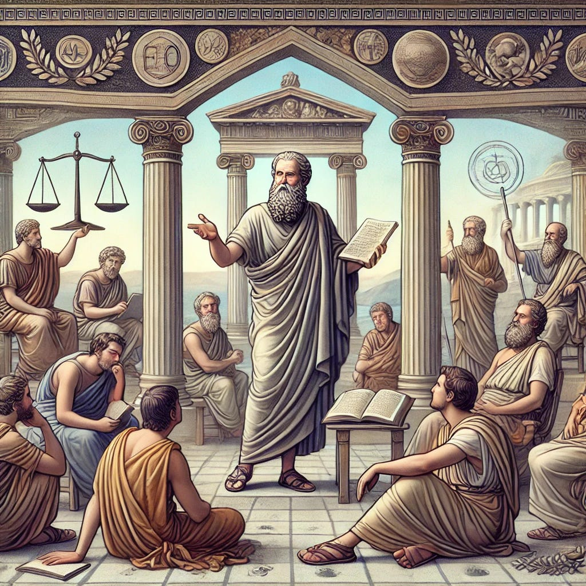

Famous Stoics
Stoicism is a philosophy that has endured for thousands of years, influencing and inspiring countless individuals. While it has had many great thinkers throughout history who contributed to its development, there are ten in particular whose legacies have left the greatest impact on the philosophy. From its origins in ancient Greece to its spread throughout the Roman Empire and beyond, the following are the most famous stoic philosophers throughout history.
The Origins of Stoicism
The Founding Father: Zeno of Citium
Zeno of Citium is often considered the father of Stoicism. Born on the island of Cyprus in the third century BCE, he began his philosophical studies at a young age. He was deeply influenced by the teachings of Socrates, and he eventually settled in Athens, where he began teaching and founded the Stoic School. As a philosopher, Zeno emphasized the importance of rationality, self-control, and virtue. He believed that by practicing these virtues, individuals could achieve a state of inner peace and tranquility.
Zeno’s teachings attracted a diverse group of followers, including merchants, politicians, and even slaves. His ideas laid the groundwork for the development of Stoic philosophy, which would go on to have a lasting impact on Western thought.
The Early Development of Stoic Philosophy
After Zeno’s death, the Stoic School continued under the leadership of several notable philosophers, including Cleanthes, Chrysippus, and Diogenes of Babylon. These thinkers built upon Zeno’s ideas, developing a more comprehensive system of philosophy that emphasized the importance of living in accordance with nature and accepting one’s fate.
One of the key principles of Stoicism is the idea that individuals should focus on what they can control and accept what they cannot. This idea is exemplified in the famous Stoic saying, “Man is not disturbed by things, but by the views he takes of them.” Stoics believed that by focusing on their own thoughts and attitudes, they could achieve a state of inner peace, even in the face of external adversity.
Another important aspect of Stoic philosophy is the belief in the unity of all things. Stoics believed that everything in the universe is interconnected and that individuals should strive to live in harmony with the natural world. This idea is closely tied to the Stoic concept of logos, which refers to the divine reason or intelligence that governs the universe.
Stoicism also emphasizes the importance of cultivating virtues such as wisdom, courage, and justice. These virtues are seen as essential for achieving a state of eudaimonia, or human flourishing. Stoics believed that by practicing these virtues, individuals could live a life of purpose and meaning.
Overall, Stoicism has had a profound impact on Western thought, influencing everyone from Roman emperors to modern-day philosophers. Its emphasis on rationality, self-control, and virtue continues to inspire individuals seeking to live a more meaningful and fulfilling life.
Most famous stoic philosophers
The Roman Stoics
The philosophy of Stoicism originated in ancient Greece, but it was the Roman Stoics who truly made it their own. Stoicism was a philosophy that emphasized the importance of living in accordance with nature, cultivating wisdom, and practicing virtue. The Roman Stoics, in particular, were known for their emphasis on self-control, acceptance of fate, and the pursuit of inner peace and tranquility.
Seneca: The Statesman and Playwright
Lucius Annaeus Seneca was a prominent figure at the court of the Emperor Nero, serving as his advisor and tutor. Despite his position of power, Seneca remained committed to his Stoic beliefs and wrote extensively on the importance of living a virtuous life. In addition to his philosophical works, Seneca was also a playwright and his plays often explored Stoic themes, such as the importance of self-control and the acceptance of fate.
Seneca’s life was not without controversy, however. He was accused of involvement in a plot to assassinate Nero and was forced to commit suicide as a result. Despite this tragic end, Seneca’s legacy as a philosopher and playwright has endured.
Epictetus: The Former Slave Turned Philosopher
Epictetus was born a slave in the Roman Empire, but he eventually gained his freedom and became one of the most influential Stoic philosophers. He taught his philosophy to his students in the form of oral lectures, which were later recorded in the book known as the Discourses. Epictetus emphasized the importance of self-mastery, the acceptance of fate, and the pursuit of inner peace and tranquility.
Despite his humble beginnings, Epictetus’ teachings had a profound impact on the world of philosophy. His emphasis on personal responsibility and self-control continue to inspire people to this day.
Marcus Aurelius: The Philosopher Emperor
Marcus Aurelius was not only a Roman Emperor who ruled from 161 to 180 CE, but also a prominent Stoic philosopher. His Mediations is considered one of the greatest works of Stoic philosophy. In it, he reflects on his own struggles to live a virtuous life and offers advice on how to cultivate inner peace and tranquility.
Despite the many challenges he faced as a ruler, Marcus Aurelius remained committed to his Stoic beliefs and sought to live a life of virtue and wisdom. His ideas continue to inspire people around the world to this day, making him one of the most enduring figures in the history of philosophy.
The Greek Stoics
The Stoics were a school of philosophy that originated in ancient Greece and became popular in the Roman Empire. They believed in living a virtuous life through reason and self-control, and that true happiness could only be achieved by living in accordance with nature and accepting one’s fate.
Chrysippus: The Systematizer of Stoicism
Chrysippus was a philosopher who lived in the third century BCE and is considered one of the most important of the early Stoics. He was instrumental in systematizing Stoic philosophy, developing a comprehensive system of logic and ethics that would influence later generations of Stoic thinkers. Chrysippus emphasized the importance of living in accordance with nature and the acceptance of fate.
Chrysippus’ contributions to Stoic philosophy were vast and varied. He developed a system of propositional logic that would become the foundation for later work in the field. He also emphasized the importance of living in harmony with nature, believing that the natural world was a source of wisdom and inspiration. Chrysippus believed that it was possible to achieve a state of tranquility and inner peace by accepting one’s fate and living a virtuous life.
Cleanthes: The Second Head of the Stoic School
Cleanthes was a philosopher and the second head of the Stoic School after Zeno of Citium. He was known for his religious and moral teachings, which emphasized the importance of ethical behavior and the pursuit of wisdom. Like other Stoics, Cleanthes believed that true happiness comes from within and that external circumstances have little bearing on one’s inner state of being.
Cleanthes’ teachings were heavily influenced by his belief in the power of the universe. He believed that the universe was a rational and ordered system, and that humans could achieve a state of harmony with it through reason and self-control. Cleanthes also emphasized the importance of living a virtuous life, believing that this was the only way to achieve true happiness.
Diogenes of Babylon: The Diplomat Philosopher
Diogenes of Babylon was a philosopher who lived in the second century BCE and served as the head of the Athenian school of Stoicism. He was also a diplomat who served as an ambassador to Rome and was known for his ability to resolve disputes through reasoned argument. Diogenes’ philosophy emphasized the importance of rationality, self-control, and the pursuit of wisdom.
Diogenes’ diplomatic skills were highly valued by the Stoic community, and he was often called upon to mediate disputes between different factions. He believed that rationality and self-control were the keys to resolving conflicts, and that wisdom was the ultimate goal of human existence. Diogenes’ teachings emphasized the importance of living a virtuous life and striving for excellence in all areas of one’s life.
In conclusion, the Stoics were a school of philosophy that emphasized the importance of reason, self-control, and living in accordance with nature. Chrysippus, Cleanthes, and Diogenes of Babylon were all important figures in the development of Stoic philosophy, and their teachings continue to influence modern thinkers today.